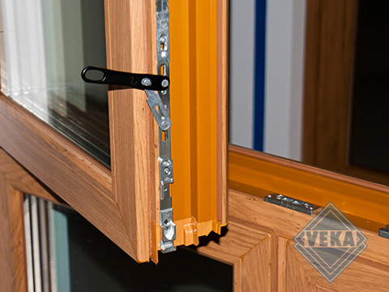

Коли Ви робите ремонт або будуєте новий будинок, не обійтись без заміни чи встановлення старих вікон на нові. У такому випадку доведеться зробити вибір між дерев'яними, алюмінієвими та металопластиковими вікнами. Кожні з них мають свої плюси і мінуси, але на даний момент найпопулярнішим рішенням є пластикові вікна. Цьому сприяє їхня невелика ціна, екологічність, практичність та енергозбереження.

Металопластиковий профіль Veka
Енергозберігаючі властивості. Найголовніша перевага даного типу вікон – теплозбереження. Коли ціни на тепло виросли та забезпечувати своє житло стабільним рівнем тепла стало накладно європейські інженери розробили новинку – металопластикове вікно. Вона стала дуже успішною і виправдала покладені на неї очікування, чудово демонструючи свої енергозберігаючі властивості.
Шумоізоляція. Напевно, Вам доводилося чути багато зайвого шуму, який проникає в будинок крізь щілини. До всього цього можна додати пил, яким Ви дихайте, що явно не додає здоров'я. Встановлення пластикових вікон позбавить Вас цих проблем.
Практичність та простота догляду. З пластиковими вікнами Ви забудете про заклеювання вікон на зиму та їх фарбування. Максиму що потрібно - це помити їх мильним розчином 2-3 рази на рік і змастити елементи фурнітури.
Безпека. Завдяки антивандальній фурнітурі Ви можете бути спокійні на рахунок проникнення в будинок зловмисників, адже це вимагає більше часу і дуже галасливо. Для злодія це головний критерій, він обмине такий будинок.
Дизайн. Ви можете вибрати вікно з широкого спектру кольорів та форм, що зробить інтер'єр унікальним. Це може бути аркове вікно або стандартне прямокутне. Пластикові вікна поєднуються як у стилі "hi-teck", так і добре виглядають у приватному будинку, квартирах, магазинах.
Недоліки
Про металопластикові вікна ходять дуже багато різних міфів. Кажуть що вони "не дихають", а при попаданні світла взагалі виділяють небезпечні речовини. Ці побоювання спричиняють наявність свинцю в конструкції. Проте дослідження довели, що з пластикового профілю свинець не випаровується і не виділяється. Профіль відповідає всім стандартам та нормам безпеки. А унікальна система мікропровітрювання забезпечує циркуляцію свіжого повітря у приміщенні. Тому всі побоювання викликані з цього приводу є лише "міфом".
Єдині недоліки профілів із металопластику – це неможливість фарбування та виробництво великих габаритів конструкцій. Усе. Для завдань, які поставлені перед ним, він справляється на всі 100% і окупить кожну копійку витрачену на нього.
Ми здійснюємо продаж та встановлення платикових вікон на нашому сайті, а також в офісі фірми. Замовте пластикові вікна з представлених профілів, зателефонувавши за номером +38(097)393-25-74. Менеджер прорахує конструкції і зв'яжеться з Вами протягом 15 хвилин.